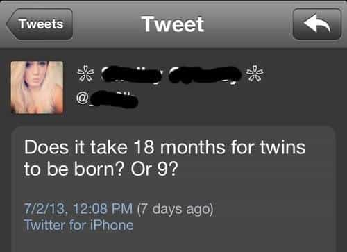

is an aspiring philosopher king, living the dream, travelling the world, hoarding FRNs and ignoring Americunts. He is a European at heart, lover of Latinas, and currently residing in the USA.


This week we continue the analysis of last year’s press conference Roosh held after the meetups were cancelled. We left off analyzing the brain-dead questions that journalists ask that should make you question their intelligence. Click here to read part one.
Would you say that media misinterpretations is the best thing that ever happened to you?
Go home you narcissistic cunt. This is not about you. Your job is to spread interesting or important news. You are not the news. The fact that you affected someone’s life in a positive or negative way should never be news. Go home, go directly home, do not pass go, do not collect $200, go straight to your closet, and hang yourself you lying piece of garbage.
How many bodyguards do you have?
Seriously? Unless you’re interviewing MC Hammer about his entourage, how could this be interesting to anyone, unless you plan on sharing information so the guy could be attacked?

What are you doing the next couple of days?
This is the type of bad question I cringe after asking a girl when I run out of anything interesting to say. You’re asking it during a live press conference? Do you even elderly game?
How often do you return for your mom’s meatloaf?
I’ll give this guy the benefit of the doubt that he is just trying to be friendly. But inappropriate for a press conference.
Have you had any trouble travelling internationally yet? Do you plan on trying to go to Australia?
I’m considering stopping this article if the questions don’t improve. How many different ways can I say “This question was irrelevant and boring?” Guys, read up on some day game openers and conversation skills.
What does your mom think about all this?
DING DING DING! We have a winner! Someone asked an interesting question! Now, she shouldn’t be part of the story at all, and only is, because of the media lying and doxxing, but this, under the circumstances, is something people might actually be interested in knowing. Answer: She’s angry at YOU, media!
Do you agree that if a girl is too drunk to consent to sex, and you have sex with her, that is legally defined as rape?
(Reporters begin arguing amongst each other about what the legal definition of rape is.)
The legal definition of rape is a factual thing, that can be verified by consulting local codes. The definition does vary from place to place. The legal definition has no bearing on what an individual person thinks about labeling of a certain behavior. Roosh doesn’t even live in the legal jurisdiction the journalists do, and his opinion on law is not relevant to what the law of a certain place objectively states. Stupid question. As your fellow journalists agreed.
What’s your opinion on Bill Cosby?
What’s your favorite flavor of ice cream? Roosh doesn’t even know Bill Cosby. I generally don’t care about someone’s opinion of someone they haven’t met and don’t know.
How did this become your issue?
That is not a question. What is “this”? The implication is rape, but the journalist doesn’t want to say it, because he doesn’t want it to be as obvious that HE is the one obsessed with rape. And again, it’s obvious to anyone out there, rape became an issue because the media lied about it and made it an issue. Just as Milo Yiannopoulos is now stuck discussing homosexual underage sex, the media is what made it an issue, and is the only reason it is being discussed.
Are you happy?
This was more a forced question. This girl couldn’t think of anything to say, but Roosh called on her. We’ll chalk this up to friendly curiosity.
How much did this cost you?
Why do you want to know? Are you interested in quantifying the damage of your lies? Or are you just being a dick?
What’s your vision for the future for male/female relations?
And here we have our second interesting question! And the first one that with any sort of journalistic merit that a reporter could develop into an interesting article.
Some dumbass in the back when pressed for a question says, “These guys have already asked most of the questions that I would have asked.”
REALLY!??????? I would ask more interesting questions of a homeless stranger!
Besides anti-PC stuff, what do you like about Donald Trump?
This is a personal background question that might be somewhat interesting in a sit-down interview, so we’ll give it half a point.
Why did you cancel the meetups?
And my faith is briefly restored, as we get a third real question, and the second one that has journalistic merit. What would have happened if the meetups were cancelled? How did you weigh that decision? Someone give this girl a gold star.
Why do the meetings in secret?
This is what I mean when I talk about absurd, self-evident questions. You could take a goat herder from Afghanistan, briefly explain to him that a men’s meetup group was labeled as a rapists club by the media, and they had to cancel their meetings, and HE would be able to tell you why any meetings must take place privately (actually, he probably would be confused at a group of journalists having power over what men do in their private time together, but you get my point). If you can’t figure this one out, turn in your journalism credentials immediately, if you haven’t already lost your job yet.
Kudos to Roosh for being able to calmly and honestly answer this question. I have not the patience.
How many girls have you had sex with?
I must congratulate Roosh for having the patience to sit through these inane, ridiculous questions from “professional” “journalists.” To the dispassionate observer, they were boring and stupid. To someone personally affected by their lies, it must be enraging to have them treat the issue so trivially and amateurish.
Congratulations are in order for masterfully taking advantage of these absurd questions, and making a point when there was none in the question itself. Almost every absurd or self evident question was met not with the simple obvious answer, but used strategically to expound on an idea and attack the media for their buffoonery.
Here we have 35 questions, 33 of which have no journalistic merit, indicating a 5.7% chance that if one is in a press conference, one will be asked an interesting, legitimate question. In total there were 3 decent questions and 3 half questions, so if one really stretched, around 12.9% of the questions were not absurd. How does this compare to the general public?
Fortunately we have just the data needed for such an experiment. We can look to the 131 questions Roosh answered from the general public late last year. Anyone with internet access who wished to pose a question could do so, and they were answered in a series of video chats on Youtube. Without examining all questions, I took a sample of 5 per each topic area. Here are the results followed by how many questions I deemed “good” or of universal appeal to a general audience.
Lifestyle / Health: 5/5. All were interesting questions. Example: What skills do you think 18-30 year olds should develop? Does it change after 30?
American Politics: 2/5. There were many “What would you do if given incredible political power” hypotheticals, which are not that interesting to me, but perhaps something cool for Roosh to dream about at night.
Religion / Spirituality: 4/5. Example: How can one prepare for the end / death?
Game / Travel: 5/5. No surprise here, as this is Roosh’s core area of expertise, and there were many curious, thoughtful questions. Example: If you could live in one city for the next 5 years, what would it be?
Personal: 4/5. I didn’t want to include this section, as personal questions are less likely to be of broad interest, but surprisingly the results were far above the journalist’s rate of 5.7%. Example: If you do not marry and have children, how will you spend your remaining years?
Globalism / Politics: 3/5. Most of the questions here were still interesting. Example: Why do you care about what happens to Western civilization?
Patriarchy / Tradition: 5/5. Plenty of excellent, thoughtful questions here as well. Example: Do you conclude it is not the nation but urban vs rural ideals?
The total random sample from the Roosh questions: 28/35 good, thoughtful, interesting questions, or a ratio of 80%. Compared to the professional journalists rate of 5.7%. In other words, for every 14 press conferences held, journalists could ask as many good questions as one group of strangers.
Which set of questions would you rather have answered by Roosh: the full list of media questions presented in bold text, or the five sample questions above I drew from the general public? Which paint a picture of Roosh, provide interesting ideas worthy of discussion, or stimulate your thinking? Which have broader implications for society, or could impact your life? Personally, I’d take the worst question from the public list of 131 over the best of the journalists (“Why did you cancel the meetups?”).
The media has proven themselves completely useless. Take your news from alternate sources, and consider looking abroad for a foreign media viewpoint. Do not trust the dishonest mainstream media, or clickbait publications like Buzzfeed. Their power is waning. The average age of a Fox news viewer is 68, and no mainstream news program comes even near the audience size of The Talking Dead, where people gossip about the episode of the zombie series the Walking Dead that just aired the prior hour.
The irony is that while sites like Infowars may dwarf CNN in audience size, the mainstream media still has huge influence and power. This is because the institution of the press is an important and valuable one, and it takes more than a few years of mismanagement to completely destroy it. If journalism schools keep teaching the same garbage that has created the current media mess, and average people off the street continue to do better jobs of asking and answering questions, one must wonder how long their power will continue.
The continuing growth of ROK is proof that crowdsourced media will fill the void caused by the press. As major institutions have abandoned the values that Western civilization built up over centuries through patriarchy, moral codes, and religion, we are seeing a backlash directly from the people that see the decline in our society, our families, and our culture. We will not go quietly into the night.
(My personal sources of news include: CS Monitor, Steve Lendman Blog, Justin D Martin, Vineyard of the Saker, Non-Intervention, This Can’t Be Happening, ZeroHedge, Infowars, and various international publications.)
Read Next: How To Incite Human Beings To Violence Through False Headlines